서교동 다가구주택 용도변경 대수선
골목 안쪽의 다가구주택을 근린생활시설로 전환하며 구조와 외관, 내부 공간을 새롭게 구성한 리모델링 프로젝트

주거용 다가구주택에서 근린생활시설로
이번 프로젝트는 서교동 골목 안쪽에 위치한 기존 다가구주택을 근린생활시설로 용도변경한 대수선 리모델링입니다. 큰 골목에서 건물이 바로 보이지 않는 입지 특성을 고려해 외관의 인지성과 시인성을 높이는 방향으로 디자인을 계획했습니다. 기존 건물의 재료와 구조를 최대한 활용하면서도, 상업 공간으로 사용하기에 적합하도록 내부 구조와 출입 동선, 창호와 외관을 함께 정리했습니다.
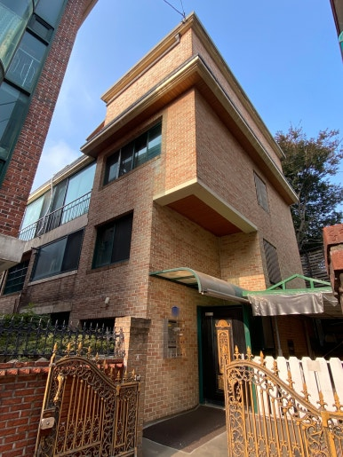
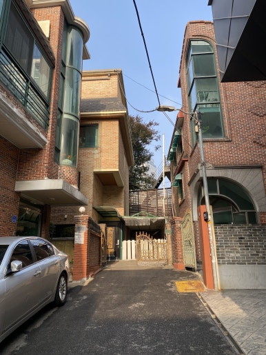
골목 안쪽에서도 존재감이 드러나는 외관
공사 전에는 기존 벽돌을 최대한 활용하는 방향부터 큐블럭, 노출콘크리트, 우드 소재를 적용하는 방향까지 여러 외관 시안을 검토했습니다. 최종적으로는 기존 벽돌 위에 화이트 도장을 적용하고 블랙 금속 프레임과 외부 구조물을 더해, 미니멀하면서도 골목에서 쉽게 인지되는 외관을 만드는 방향으로 결정했습니다.
초기 시안에서 창호를 추가해 개방감을 보완하고, 화이트와 블랙의 대비가 건물 전체에 일관되게 이어지도록 세부 비례와 마감 위치를 조정했습니다.
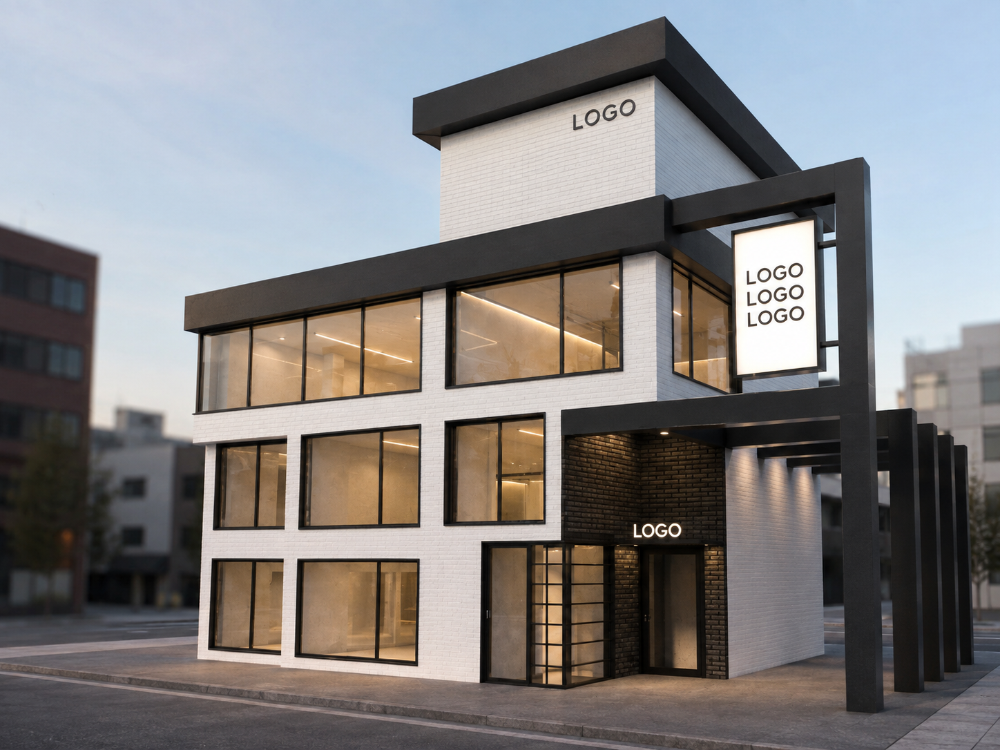
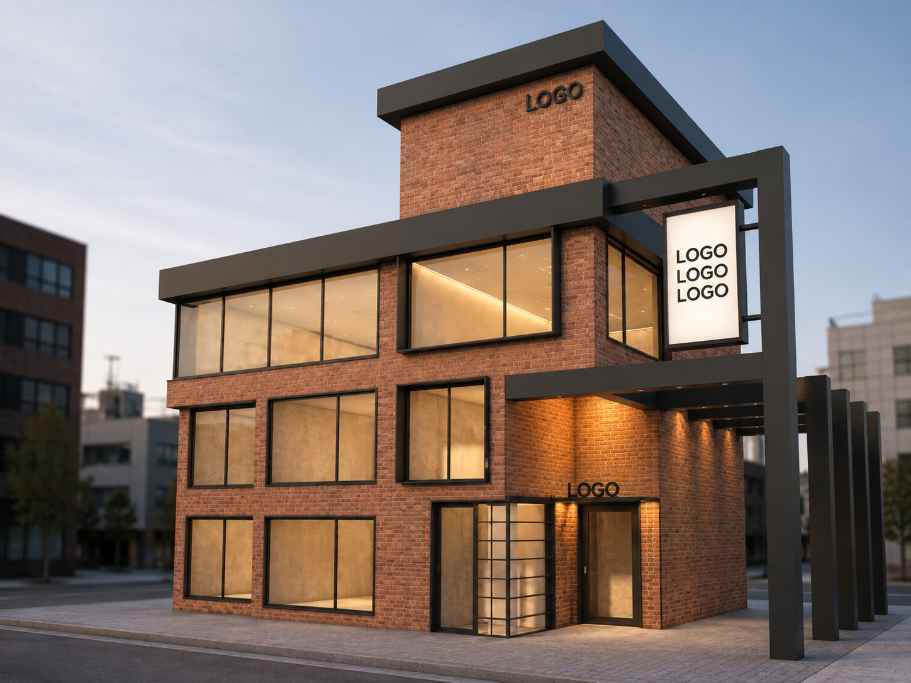
필요한 부분은 남기고, 내부 구조는 과감하게 정리
기존 다가구주택은 한 층이 두 가구로 나뉘어 있었습니다. 근린생활시설에 맞는 넓고 개방적인 공간을 만들기 위해 내부 벽체를 철거하고, 철거 중에는 잭서포트를 설치해 구조를 안정적으로 지지하며 작업을 진행했습니다. 살릴 수 있는 부분은 유지하고 철거가 필요한 부분만 선별해 공사 범위를 조정했습니다.
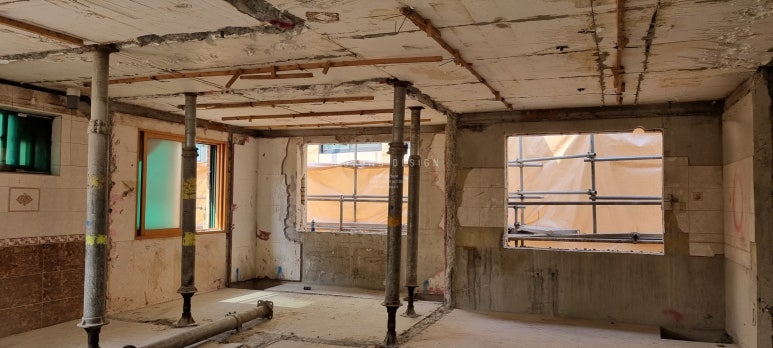
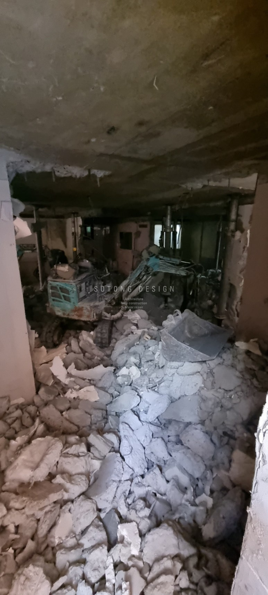
H빔으로 다시 잡은 건물의 구조
벽체 철거로 하나의 넓은 공간을 만들면서 구조적 안정성을 확보하기 위한 H빔 보강을 함께 진행했습니다. 1층부터 3층까지 보강 위치가 수직으로 이어지도록 계획하고, 건물의 하중이 안정적으로 전달될 수 있도록 구조보강 공정을 진행했습니다.
골목 안쪽 현장이라 크레인 작업이 어려운 구간은 체인블록을 활용해 H빔을 이동하고 설치했습니다. 설치가 끝난 철골에는 녹 발생을 방지하기 위한 방청도장 작업을 진행한 뒤 후속 마감을 준비했습니다.
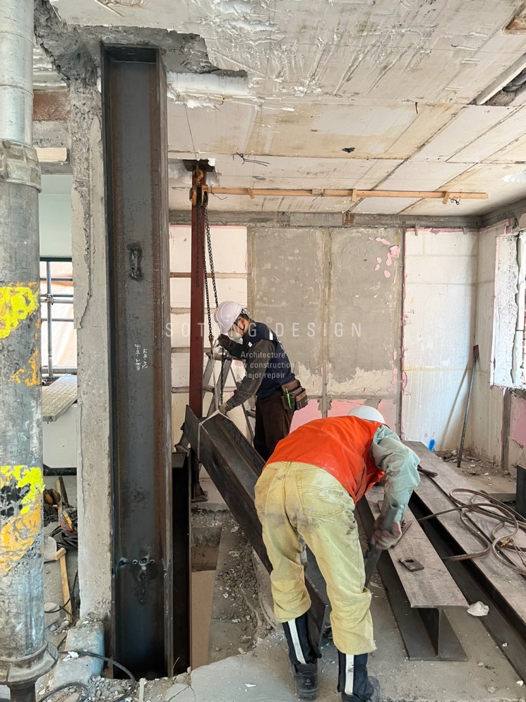
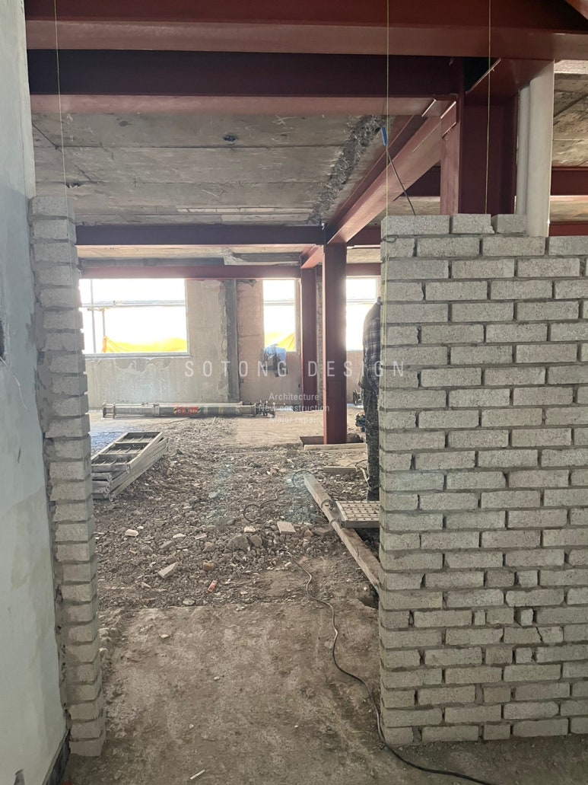
철거, 임시 지지, 구조보강은 각각 분리된 공정이 아니라 안전한 대수선을 위해 순서와 연결 관계를 함께 관리해야 하는 작업입니다.
조적과 창호로 새롭게 만든 공간과 동선
구조보강 이후에는 철거로 비워진 부분을 조적으로 다시 정리하고, 근린생활시설에 맞는 새로운 공간 구성을 만들었습니다. 기존 두 세대의 출입구는 하나로 통합하고, 화장실은 출입구 쪽으로 재배치했습니다. 기존 발코니가 있던 자리도 화장실 공간으로 연장해 조적벽과 샷시로 구획했습니다.
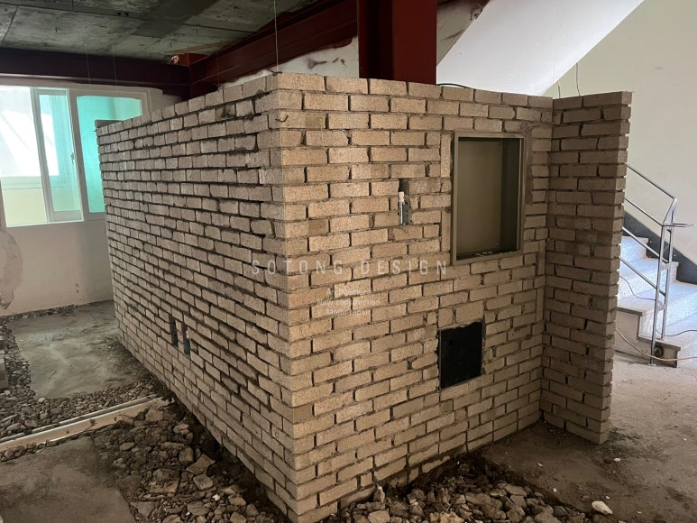
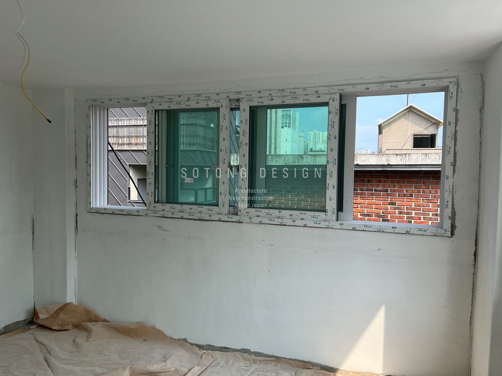
화이트 도장과 블랙 프레임으로 정리한 외관
기존 외장재를 최대한 활용하기 위해 기존 조적 외벽 위에 화이트 도장을 적용했습니다. 화이트 벽돌과 블랙 창호, 금속 프레임이 선명하게 대비되도록 마감하고, 내부의 노출 H빔 역시 화이트 컬러로 도장해 공간 전체의 인상을 통일했습니다.
1층과 2층은 노출천장으로 개방감을 살리고, 3층은 석고보드와 보강 작업 후 화이트톤으로 천장을 마감했습니다. 문과 벽체의 각진 부분은 코너비드 작업으로 라인을 반듯하게 정리했습니다.
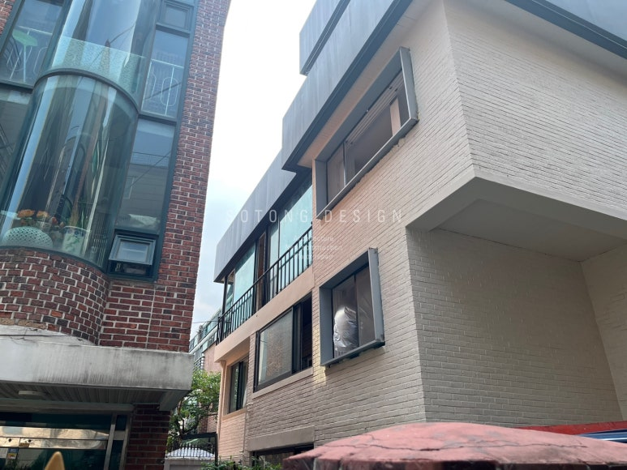
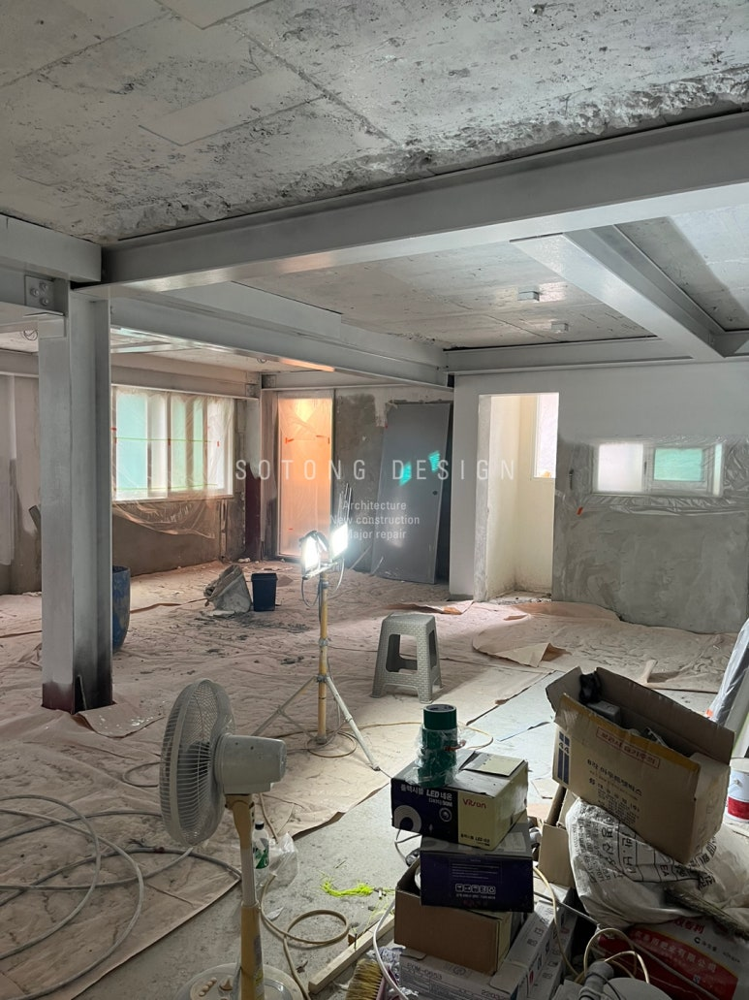
베이지 포세린타일로 완성한 화장실
새롭게 구성한 화장실은 방수와 천장 마감, 실리콘 공사 이후 타일과 줄눈 시공을 진행했습니다. 내부에는 베이지톤 포세린타일을 사용해 무광의 차분한 질감과 따뜻한 분위기가 함께 느껴지도록 마감했습니다. 배수와 환풍 등 실제 사용에 필요한 설비도 함께 정리했습니다.
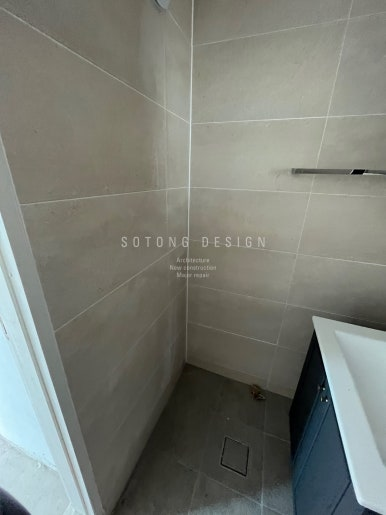
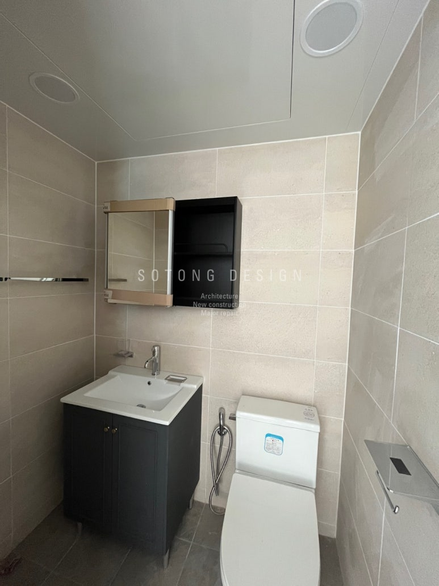
골목 안쪽의 주택이 새로운 근린생활시설로
완공된 외관은 기존 벽돌의 질감을 살린 화이트 도장과 블랙 금속 프레임의 대비가 중심이 됩니다. 골목에서 가장 잘 보이는 방향에 구조물을 배치해 건물의 존재감을 높이고, 창호와 출입구 주변의 선을 정리해 기존 다가구주택의 인상을 새로운 상업 공간의 이미지로 전환했습니다.
철거부터 구조보강, 조적, 창호, 외관과 내부 마감까지 이어진 공정을 통해 주거용 건물이 근린생활시설로 새롭게 기능할 수 있도록 전체 흐름을 조율했습니다.
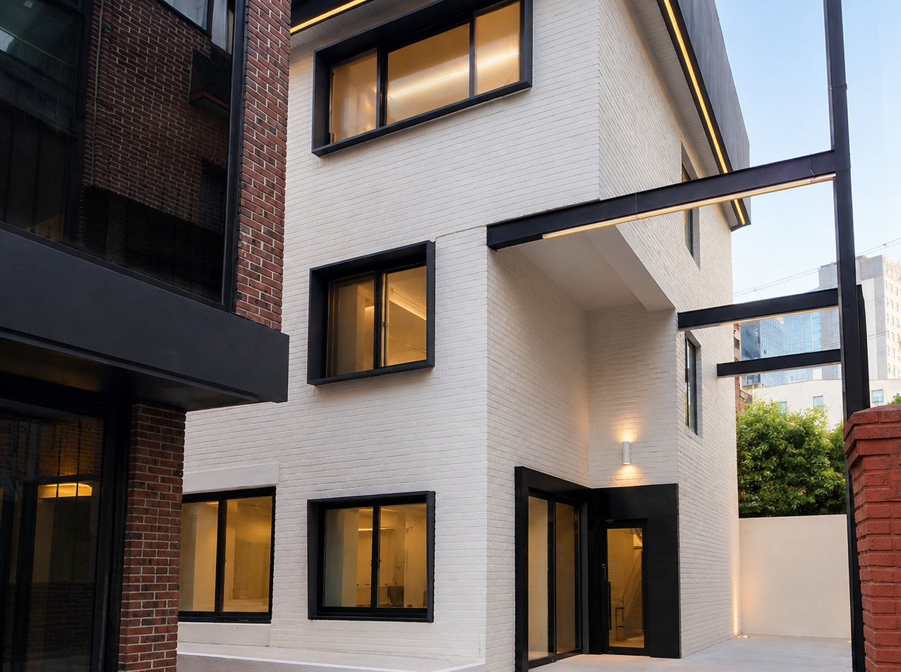
서교동 대수선 리모델링 핵심 포인트
다가구주택에서 근린생활시설로
기존 주거 구조를 상업 공간에 맞게 재구성하고 출입 동선과 창호, 화장실 위치를 새롭게 계획했습니다.
H빔을 활용한 구조보강
벽체 철거 후 넓어진 공간에서도 안정적인 구조를 유지할 수 있도록 층별 H빔 보강과 방청도장을 진행했습니다.
화이트와 블랙으로 만든 존재감
기존 벽돌 위 화이트 도장과 블랙 금속 프레임을 조합해 골목 안쪽에서도 쉽게 인지되는 외관을 완성했습니다.
도면과 시안을 현장까지 연결
작업 주의사항, 도면과 디자인 시안을 현장에 공유하고 공정별로 확인하며 계획한 디자인이 실제 시공까지 이어지도록 관리했습니다.
기존 건물의 가능성을 다시 설계합니다.
대수선과 용도변경, 외관 리모델링부터 실내 공간까지 상담부터 디자인, 시공과 준공을 함께합니다.
※ 본 포트폴리오의 이미지는 실제 시공 및 현장 기록을 바탕으로 구성됩니다. 일부 이미지는 촬영 환경에 따라 밝기·색감 및 주변 요소를 보정하여 실제 시공 결과를 보다 명확하게 전달하고 있습니다.